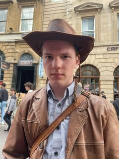

GitHub; ORCID; LinkedIn; Fediverse

M.Sc.R. student at the University of Bristol in the Programming Languages Research Group supervised by Dr. Alex Kavvos.
My research is primarily in understanding the nature of computation, types and verification mathematically, especially through the lenses of category theory and logic.
In particular, I am currently studying
The primary function of a university is to teach. As a postgraduate research student, alongside my own studies and research, I have been allowed to take on some teaching responsibilities.
I participate in and run a few reading groups at the university.
Please use my email or message me on the PLRG Zulip, which I check far more often than Teams.